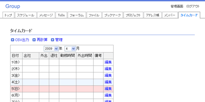

Webタイムカード。
月ごとに合計時間を計算でき、管理者はメンバーの勤怠状況を一括管理できます。
出社時に出社ボタンを押して出社時刻を登録します。
固定出社時刻を設定しておくと、固定出社時刻より前の出社時刻は全て固定出社時刻になります。
外出時に外出ボタンを押して外出時刻を登録します。
固定外出時刻を設定しておくと、固定外出時刻内は常に外出時間になります。
外出から戻ってきた時に復帰ボタンを押して復帰時刻を登録します。
復帰時刻を登録すると、再度外出時刻を登録できるようになります。
外出時間は何度でも登録できます。
退社時に退社ボタンを押して退社時刻を登録します。
固定最終時刻を設定しておくと、固定最終時刻より後の退社時刻は全て固定最終時刻になります。
退社時刻を登録するとその日の勤務時間が計算され、登録されます。
登録した時刻を編集画面から編集できます。
編集した時刻は一覧画面では赤字で表示されます。
編集を実行するとその日の勤務時間が計算され、登録されます。
出社時刻、最終時刻、固定外出時刻、出退社計算単位、外出時間計算単位を登録できます。
計算単位を登録することで1分単位、または10分単位で勤務時間を計算します。